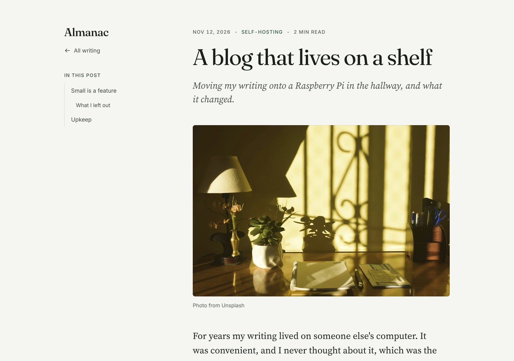

Ghost 6 · Raspberry Pi · Cloudflare Tunnel
Your own Ghost blog on a Pi. One command.
Ghostberry sets up Ghost 6, MySQL 8 and a Cloudflare Tunnel on a Raspberry Pi with Docker. The Pi opens no inbound ports, every container is locked down, backups are encrypted every night, email works from the first boot, and your blog starts on a theme made for reading.
$ curl -fsSL https://raw.githubusercontent.com/dm807cam/ghostberry/main/install.sh | sudo bash
Asks for your blog's address, your Cloudflare Tunnel token, and how Ghost should send email.
$ curl -fsSL https://raw.githubusercontent.com/dm807cam/ghostberry/main/install.sh \ | sudo GHOST_URL=https://blog.example.com \ CLOUDFLARE_TUNNEL_TOKEN=YOUR_TUNNEL_TOKEN \ NONINTERACTIVE=1 bash
No prompts. Uses the built-in mail server; add MAIL_RELAY_HOST, MAIL_RELAY_USER and MAIL_RELAY_PASSWORD to send through a provider, or MAIL_MODE=smtp / none.
$ curl -fsSL https://raw.githubusercontent.com/dm807cam/ghostberry/main/install.sh | sudo bash -s -- --harden
Also enables ufw (deny incoming, allow SSH; this replaces any existing ufw rules) and unattended-upgrades.
- Ghost 6
- MySQL 8
- cloudflared
- maddy mail relay
- Docker Compose + systemd
- Almanac theme
How it works
Nothing on your network is exposed
Readers reach Ghost only through Cloudflare. The tunnel connects outward from the Pi, so there's no port forwarding on your router and no public IP to protect.
/ghostEach container only joins the private networks it needs: cloudflared can reach Ghost but not the database, and only Ghost can hand mail to the mail server.
What's in the box
Production defaults, homelab hardware
The parts you'd otherwise wire up by hand, set up the same way every time.
No open ports
The Cloudflare Tunnel dials out from the Pi. Cloudflare handles TLS and DDoS protection, and you can put Cloudflare Access in front of the admin panel.
Locked-down containers
Every container drops all Linux capabilities and adds back only what it needs, runs with no-new-privileges, and has a memory cap and log rotation.
Encrypted nightly backups
Database and content (plus the mail signing key, if you use the built-in server), encrypted with AES-256 every night at 03:17. Optionally copied to Cloudflare R2 (free up to 10 GB), so a dead SD card can't take them with it.
Email from the first boot
A built-in send-only mail server signs Ghost's emails with DKIM and retries failed deliveries. Or plug in any SMTP provider.
Analytics, if you want them
Say yes during install and Umami runs next to Ghost: visitors, top posts and referrers on your own dashboard, with no cookies and the data on your Pi. The installer connects it to the blog.
Updates that find you
When a new release is out, Ghost Admin shows a banner and your admins get one email. To update, run the install command again: it backs up first and waits until Ghost is healthy.
Built for the Pi
Turns on memory cgroups, makes sure there's 2 GB of swap, installs Docker, and sizes memory limits for a 2 GB Pi 4.
The theme
Almanac, a theme made for reading
A new blog starts on Almanac, the theme this page is set in: a side rail with your name and navigation, and one serif column for the words. An existing blog keeps the theme it has.

- Light and dark. Follows the reader's device, or pick one in Ghost Admin.
- Nothing loaded from elsewhere. The fonts are served from your Pi, so pages make no third-party requests.
- All of Ghost. Members, comments, search, recommendations and every card in the editor.
- Yours to change. Plain templates and one stylesheet, no build step. How it's installed and customised.
Sign-in links and password resets, working on day one
Ghost can't invite staff, reset passwords or sign members in without email. The installer asks how you want to send it:
Built-in mail server
maddy, about 6 MB of RAM. Signs every message with DKIM, queues and retries, and delivers directly or through a relay. No account needed.
Your SMTP provider
Postmark, Brevo, Amazon SES, Fastmail, a Gmail app password… Ghost connects to it directly.
No email for now
Skip it and turn it on later: MAIL_MODE=builtin ./setup.sh, then docker compose up -d.
1) DKIM — proves the mail really comes from you Name: ghost._domainkey.blog.example.com Value: v=DKIM1; k=rsa; p=MIIBIjANBgkqhkiG9w0B… ✓ published 2) SPF — which servers may send for blog.example.com 3) DMARC — tells receivers what to do with mail that fails the checks
Prints the exact records to add in Cloudflare and checks whether each is live.
- Home connections: many ISPs block outbound port 25, and home IPs often land in spam. The installer tests port 25 and offers to relay through a provider instead (Brevo, SMTP2GO and Resend have free tiers). Mail is still signed with your own key.
- Newsletters: Ghost sends bulk newsletters only through Mailgun. The built-in server covers everything else: sign-in links, password resets, staff invites and notifications.
- Check it works:
./scripts/mail.sh test you@example.comsends a message using Ghost's own mail settings.
Get started
Three steps
About a coffee's worth of work. The installer does everything else.
-
Flash 64-bit Raspberry Pi OS
On a Pi 4 (2 GB or more) or a Pi 5. Turn on SSH in Raspberry Pi Imager, then log in.
-
Create a Cloudflare Tunnel
In the Cloudflare dashboard: Networking → Tunnels → Create a tunnel, pick Docker and copy the token (the long
eyJ…string). Then Routes → Add route → Published application for your domain, with service URLhttp://ghost:2368. -
Run the installer
Paste the command above and answer the prompts. When it finishes, open
https://your-domain/ghostto create your admin account, and add the DNS records it printed.
Day two
Everyday commands
Run from /opt/ghostberry.
./scripts/backup.sh | Back up now (one also runs every night) |
./scripts/restore.sh backups/<file> | Restore database, content and mail key from a backup |
curl -fsSL …/install.sh | sudo bash | Update: the same install command, run again |
./scripts/check-update.sh | Is a newer Ghostberry release out? |
./scripts/theme.sh activate | Switch the blog to the Almanac theme |
./scripts/mail.sh test you@example.com | Send a test email the way Ghost does |
./scripts/mail.sh status | Mail server health, queue and recent log |
./scripts/offsite.sh status | Last upload to Cloudflare R2 and space used |
./scripts/offsite.sh pull latest | Download the newest off-site backup (e.g. on a new Pi) |
./scripts/analytics.sh login | Address and login of the analytics dashboard (if enabled) |
docker compose logs -f | Follow all logs |
sudo systemctl status ghostberry | Service status |
FAQ
Before you run the script
The questions people ask first.
What exactly does the installer do?
- Checks the OS and CPU (warns on anything but 64-bit Debian, Raspberry Pi OS or Ubuntu).
- On a Pi, turns on memory cgroups in the boot command line, and makes sure there's at least 2 GB of swap.
- Installs Docker (official script), git, curl, openssl and jq.
- Clones the project to
/opt/ghostberry. - Writes
.envwith generated 40-character database passwords and a backup key, and asks how to send email and whether to copy backups to Cloudflare R2. - Installs a systemd unit, a nightly backup job and a daily update check, then starts everything and waits for Ghost to report healthy.
- Installs the Almanac theme. A blog nobody has signed up to yet starts on it; an existing blog keeps its theme.
Re-running it is how you update: it backs up first, then moves to the newest release and the exact container versions it pins.
Why a Cloudflare Tunnel?
Your Pi never accepts inbound connections: cloudflared connects out to Cloudflare,
and Cloudflare sends requests back through that connection. You get TLS without managing certificates,
DDoS protection, and your home IP stays private. You can also put
Cloudflare Access
in front of /ghost to add a login for the admin panel.
What doesn't work yet?
Newsletters need a Mailgun account, because Ghost only sends bulk email through Mailgun. Ghost 6's ActivityPub ("Network") and web analytics features need extra services that Ghostberry doesn't run yet; for visitor statistics, turn on the optional Umami analytics instead. Everything else in Ghost works.
How do I update, and how do I know when to?
When a new Ghostberry release is out, Ghost Admin shows a banner at the top and the blog's Owner and Administrators get one email. To update, run the install command again: it takes a backup, moves to the new release and the exact container versions it pins (Ghost, MySQL, cloudflared and the rest), then restarts and checks Ghost is healthy. Your settings are kept. What changed is in the changelog.
I'm on Ghost 5. How do I upgrade?
Re-run the installer. It backs up, then moves the old ghost:5-alpine default to Ghost 6,
and Ghost migrates the database on first start. Check your theme with
GScan first: Ghost 6 removed AMP. To stay on Ghost 5 for now,
pin GHOST_IMAGE=ghost:5.130-alpine in .env.
How are secrets handled?
Passwords and tokens live in /opt/ghostberry/.env, readable only by your user (mode
600). The database passwords and backup key are generated on the Pi with OpenSSL. The mail
server's DKIM key stays in a Docker volume and is included in the encrypted backups.
What if I lose the Pi?
Turn on off-site backups and every nightly backup is also copied to
Cloudflare R2, already encrypted. R2 is free up to
10 GB a month, though Cloudflare asks for a payment method when you enable it. Keep the
BACKUP_ENCRYPTION_KEY from .env and your R2 keys in a password manager. On a new
Pi: run the installer with that key and your R2 settings, then ./scripts/offsite.sh pull latest
and ./scripts/restore.sh.
Step-by-step guide.
Will it run on a Pi Zero, a Pi 3 or a 32-bit OS?
Not on a 32-bit OS: the Ghost and MySQL images are only published for 64-bit (arm64 and x86-64). Memory is the other limit. The default caps add up to about 1.5 GB, so a 2 GB Pi 4 is the smallest supported board; 4 GB gives headroom.
Is curl | sudo bash safe?
You're trusting this repository either way: cloning it and running the script executes the same code. If you'd like to read it first, it's plain bash: install.sh on GitHub.